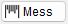
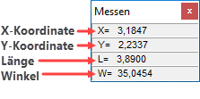
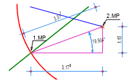
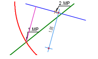
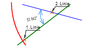
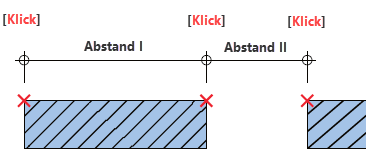

(untere Menüleiste) oder

Verwenden Sie diese Funktion, um Längen, Abstände und Winkel zu ermitteln.
Die Ergebnisse werden in der Info-Box Messen angezeigt. Mit einem Klick auf ein Messergebnis kann dieses in eine aktive Abfrage übernommen werden. Die Messgenauigkeit können Sie in den Systemdaten einstellen. [Option | SysDat | Konstruktionsprogramm → Anzahl der Nachkommastellen für Messen].
Um das Messen zu beenden, klicken Sie mit der rechten Maustaste in den Plan oder drücken Sie die Esc-Taste.
 |
|
Hinweis: |
|
Bei den Funktionen [Pnk/Pnk] und [Pnk/Lin] müssen die Elemente den gleichen Maßstab aufweisen. Ist das nicht der Fall, bleibt das Messen-Fenster leer. |

|
Tipps: |
|
·Sie können die Messwerte auch in der Titelleiste positionieren, siehe Einstellungen-Dialog [Option | Einste → Messwerte in der Titelleiste anzeigen]. ·Zudem können Sie im Einstellungen-Dialog die Messergebnisse am Cursor ab- oder einschalten [Messergebnisse am Cursor abschalten]. Dabei werden laufend die X-, Y- und L-Werte als Differenz zum ersten angeklickten Punkt am Cursor angezeigt. Wird ein Punkt gefangen, werden dessen Koordinaten angezeigt. |

Abstand zwischen zwei Punkten [Pnk/Pnk]:
Klicken Sie zwei Punkte auf Linien, Kreisen oder Hilfspunkte an. [1. Messpunkt]; [2. Messpunkt].
Angezeigt werden: X-Abstand, Y-Abstand, Entfernung und der Winkel, den die Verbindungsgerade mit der X-Achse bildet. Mit Rechtsklick beenden Sie die Messen-Funktion.
 |
Lotabstand eines Punktes zu einer Linie [Pnk/Lin]:
Klicken Sie den Ausgangspunkt und dann die Linie an, zu welcher der Lotabstand gemessen werden soll. [1. Messpunkt]; [welche Linie].
Angezeigt wird der Abstand. Mit Rechtsklick beenden Sie die Messen-Funktion.
 |
Winkel zwischen zwei Linien [Winkel]:
Klicken Sie zwei Linien in beliebiger Reihenfolge an. [1. Linie]; [2. Linie].
Angezeigt wird der Winkel zwischen den Linien sowie der Ergänzungswinkel zu 180°. Mit Rechtsklick beenden Sie die Messen-Funktion.
 |
Sequenzielles Messen
Sie können geometrisch aufeinander aufbauende Abstände messen. Dabei ist der zweite angeklickte Messpunkt zugleich der erste Messpunkt des nächsten Abstandes (Abstand II).
 |
Siehe auch:
Zugehörige Referenzen: